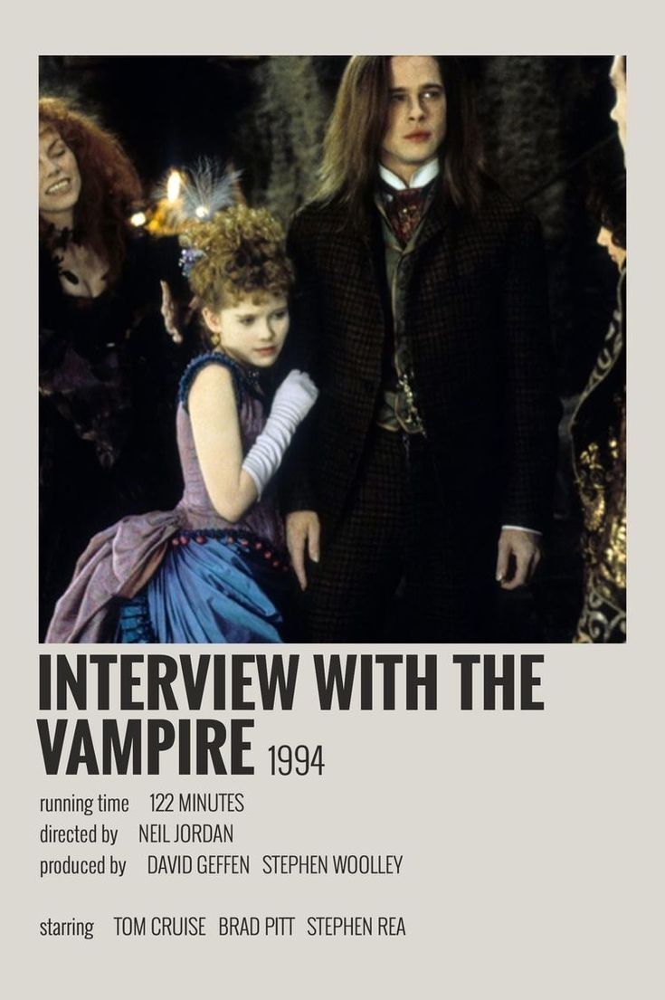
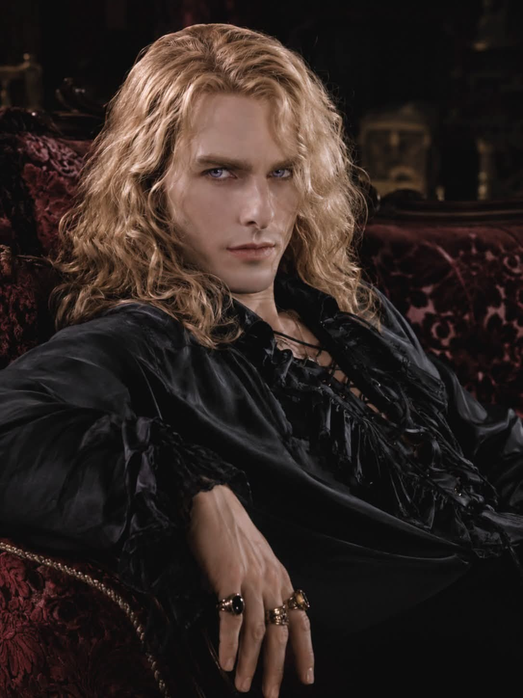
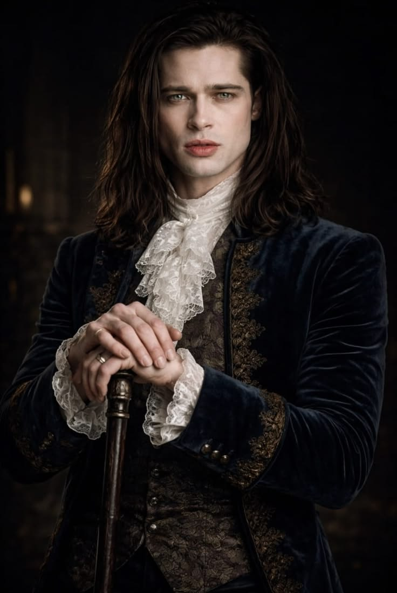
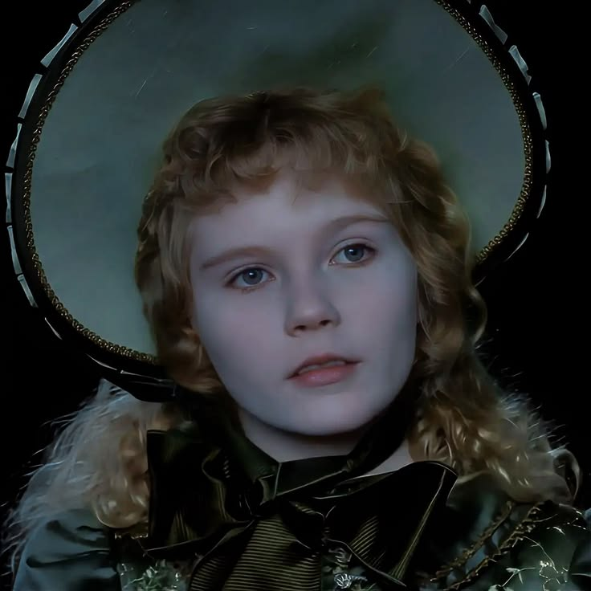
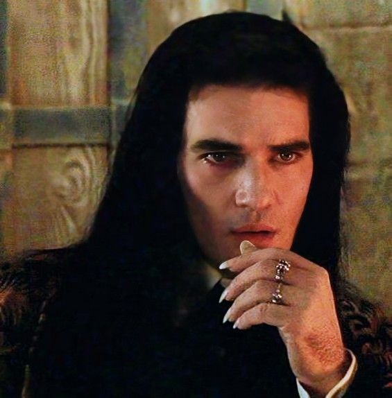
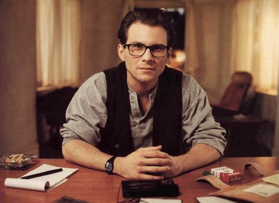

Entrevista com o Vampiro (1994), dirigido por Neil Jordan e baseado no romance de Anne Rice, é um filme de terror estrelado por Tom Cruise (Lestat) e Brad Pitt (Louis). A trama acompanha a trajetória de Louis desde sua transformação em vampiro em 1791, sua convivência com Lestat e a criação da jovem vampira Claudia (Kirsten Dunst), história narrada a um repórter contemporâneo (Christian Slater).
Lançado pela Warner Bros., o longa foi um sucesso de público e crítica, arrecadando US$ 223,7 milhões contra um orçamento de US$ 60 milhões. Recebeu duas indicações ao Oscar (Direção de Arte e Trilha Sonora Original) e rendeu a Kirsten Dunst uma indicação ao Globo de Ouro. Em 2002, ganhou uma sequência independente intitulada A Rainha dos Condenados.
Em São Francisco, o vampiro Louis conta sua história ao repórter Daniel Molloy. Transformado em 1791 por Lestat após uma tragédia pessoal, Louis recusa-se a matar humanos e vive de sangue animal. Anos depois, Lestat transforma a jovem Claudia em vampira para manter Louis ao seu lado. Embora vivam como uma família, Claudia revolta-se ao perceber que nunca amadurecerá fisicamente e tenta matar Lestat.
Acreditando ter derrotado o criador, Louis e Claudia fogem para Paris em 1870. Lá, conhecem Armand e o Théâtre des Vampires. No entanto, os vampiros locais descobrem a tentativa de assassinato de Lestat e executam Claudia expondo-a ao sol. Vingativo, Louis incendeia o teatro, mata o clã e rejeita Armand, passando as décadas seguintes vagando sozinho pelo mundo.
Ao fim do relato, Molloy pede para ser transformado, revoltando Louis pela falta de compreensão de seu sofrimento. Ao fugir de carro, Molloy é surpreendido por Lestat — sobrevivente e revigorado —, que lhe oferece a escolha de se tornar um vampiro.

Lestat de Lioncourt (interpretado por Tom Cruise): Um vampiro francês carismático, hedonista, sedutor e amoral que transforma Louis em vampiro.

Louis de Pointe du Lac (interpretado por Brad Pitt): O protagonista e narrador, um nobre do século XVIII que sofre com a culpa, a melancolia e o peso da imortalidade após uma tragédia pessoal.

Claudia (interpretada por Kirsten Dunst): Uma menina transformada em vampira por Lestat e Louis quando ainda era criança, ficando presa para sempre em um corpo infantil com mente adulta.

Armand (interpretado por Antonio Banderas): O líder de um antigo e misterioso cando de vampiros em Paris.

Daniel Malloy (interpretado por Christian Slater): O jovem repórter de São Francisco que entrevista Louis no tempo presente para registrar sua história de vida.